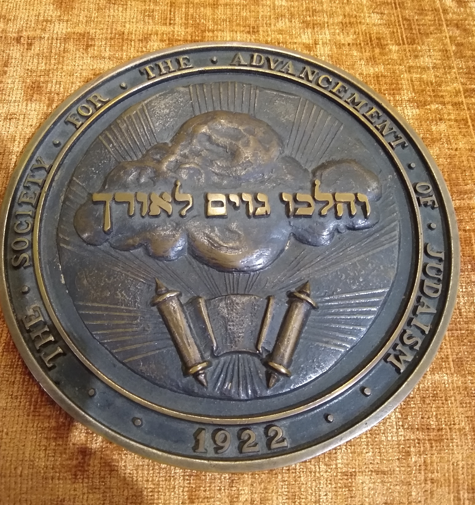

והלכו גוים לאורך
SAJ “Motto”: “V’halchu goyim l’orech” (And the Nations will walk by thy light” (Isaiah 60:3) [Insert Excerpt from SAJ Review (doc. Titled “Hebrew Inscription”), eprinted in Fifth Anniversary Dinner Booklet, March 13, 1927 (if possible, underline or otherwise highlight the last sentence: The nations will walk by thy light.)]
